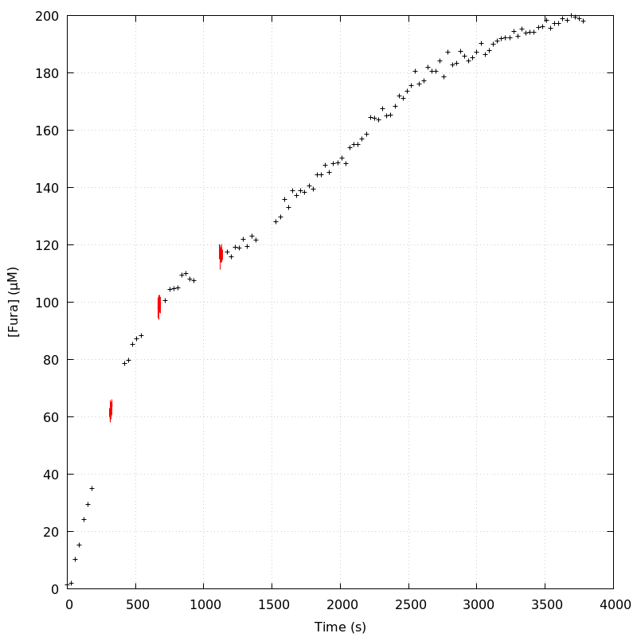
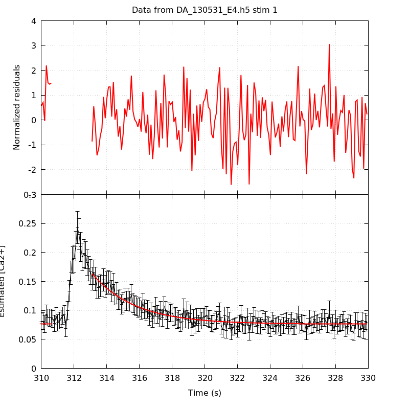
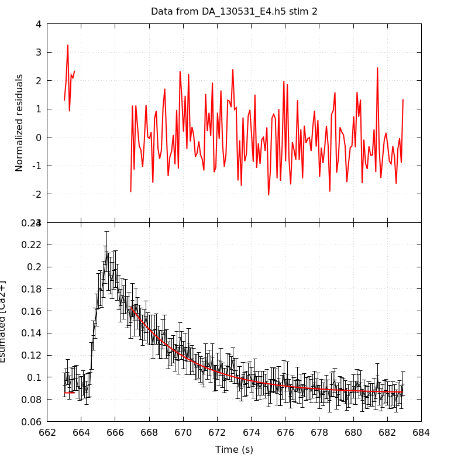
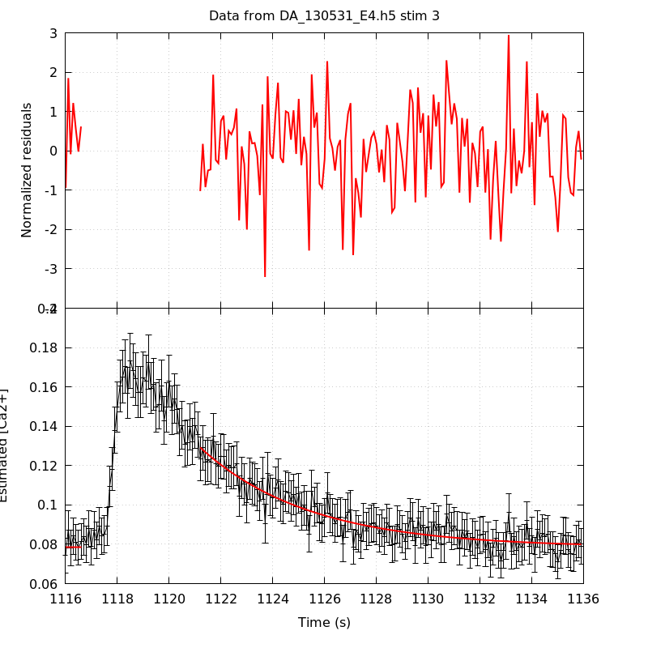
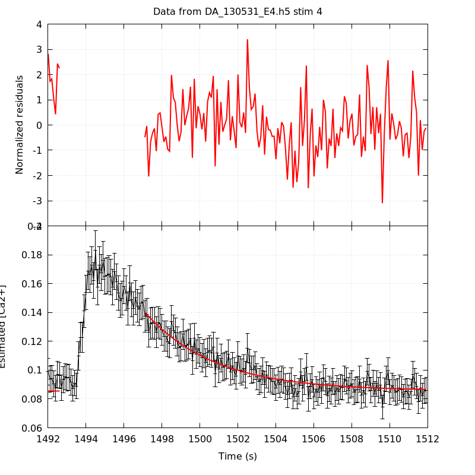
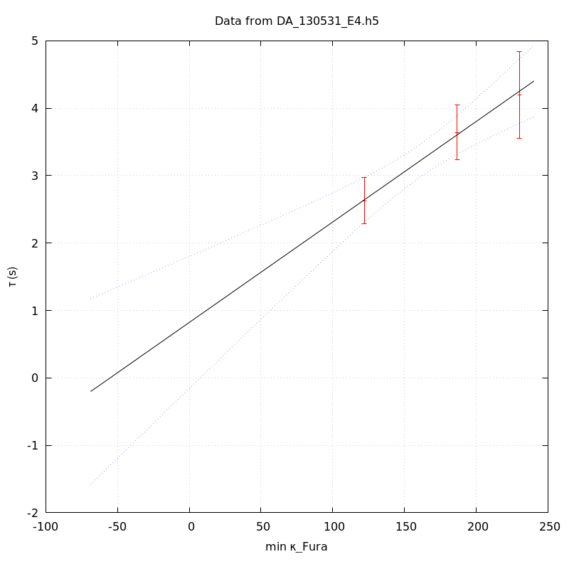
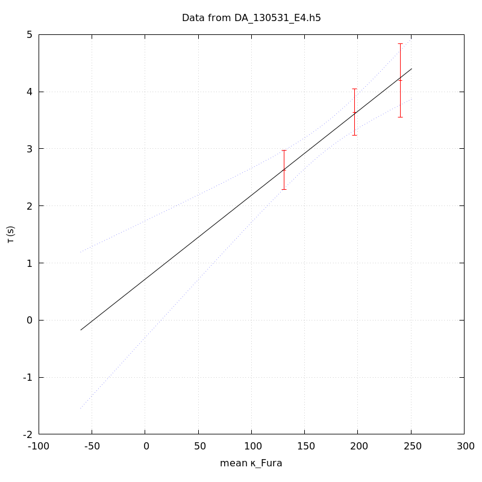
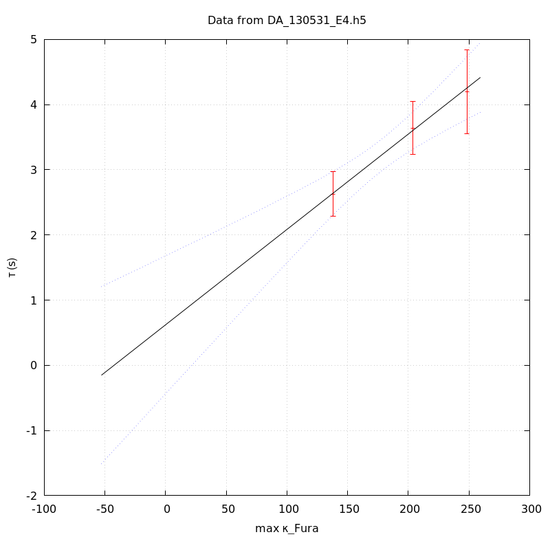

The baseline length is: 7.
When fitting tau against kappa_Fura only the transients for which the fit RSS and the lag 1 auto-correlation of the residuals were small enough, giving an overall probability of false negative of 0.02, were kept (see the numerical summary associated with each transient).
The good transients are: 1, 2, 3.
The time at which the 'good' transients were recorded appear in red.

On each graph, the residuals appear on top. Under the null hypothesis, if the monoexponential fit is correct they should be centered on 0 and have a SD close to 1 (not exactly 1 since parameters were obtained through the fitting procedure form the data.
The estimated [Ca2+] appears on the second row. The estimate is show in black together with pointwise 95% confidence intervals. The fitted curve appears in red. The whole transient is not fitted, only a portion of it is: a portion of the baseline made of 7 points and the decay phase starting at the time where the Delta[Ca2+] has reached 50% of its peak value.
The time appearing on the abscissa is the time from the beginning of the experiment.
Transient 1 is 'good'.

nobs = 176
number of degrees of freedom = 173
baseline length = 7
fit started from point 31
estimated baseline 0.0764464 and standard error 0.000849376
estimated delta 0.087004 and standard error 0.00360442
estimated tau 2.62972 and standard error 0.175262
residual sum of squares: 191.173
RSS per degree of freedom: 1.10505
Probability of observing a larger of equal RSS per DOF under the null hypothesis: 0.163475
Lag 1 residuals auto-correlation: -0.004
Pr[Lag 1 auto-corr. > -0.004] = 0.498
Transient 2 is 'good'.

nobs = 168
number of degrees of freedom = 165
baseline length = 7
fit started from point 39
estimated baseline 0.0857185 and standard error 0.000887417
estimated delta 0.0776659 and standard error 0.00222682
estimated tau 3.64248 and standard error 0.20858
residual sum of squares: 192.652
RSS per degree of freedom: 1.16759
Probability of observing a larger of equal RSS per DOF under the null hypothesis: 0.0693226
Lag 1 residuals auto-correlation: 0.069
Pr[Lag 1 auto-corr. > 0.069] = 0.204
Transient 3 is 'good'.

nobs = 155
number of degrees of freedom = 152
baseline length = 7
fit started from point 52
estimated baseline 0.0784417 and standard error 0.000974499
estimated delta 0.0507577 and standard error 0.00169389
estimated tau 4.19953 and standard error 0.32695
residual sum of squares: 179.972
RSS per degree of freedom: 1.18403
Probability of observing a larger of equal RSS per DOF under the null hypothesis: 0.0602137
Lag 1 residuals auto-correlation: -0.071
Pr[Lag 1 auto-corr. > -0.071] = 0.758
Transient 4 is a 'bad'.

nobs = 156
number of degrees of freedom = 153
baseline length = 7
fit started from point 51
estimated baseline 0.0856666 and standard error 0.000819338
estimated delta 0.0545574 and standard error 0.00173281
estimated tau 3.64483 and standard error 0.250615
residual sum of squares: 202.466
RSS per degree of freedom: 1.32331
Probability of observing a larger of equal RSS per DOF under the null hypothesis: 0.00456268
WARNING: THE FIT IS NOT GOOD!
Lag 1 residuals auto-correlation: 0.143
Pr[Lag 1 auto-corr. > 0.143] = 0.072
Since the [Fura] changes during a transient (and it can change a lot during the early transients), the unique value to use as '[Fura]' is not obvious. We therefore perform 3 fits: one using the minimal value, one using the mean and one using the maximal value.
The observed tau (shown in red) are displayed with a 95% confidence interval that results from the fitting procedure and is therefore meaningful only if the fit is correct!
No serious attempt at quantifying the precision of [Fura] and therefore kappa_Fura has been made since the choice of which [Fura] to use has a larger effect and since the other dominating effect is often the certainty we can have that the saturating value (the [Fura] in the pipette) has been reached.
The straight line in black is the result of a weighted linear regression. The blue dotted lines correspond to the limits of pointwise 95% confidence intervals.

Best fit: tau = 0.823424 + 0.0149037 kappa_Fura
Covariance matrix:
[ +2.50118e-01, -1.46281e-03
-1.46281e-03, +9.11692e-06 ]
Total sum of squares (TSS) = 24.4199
chisq (Residual sum of squares, RSS) = 0.0565167
Probability of observing a larger of equal RSS per DOF under the null hypothesis: 0.812089
R squared (1-RSS/TSS) = 0.997686
Estimated gamma/v with standard error: 67.0976 +/- 13.5937
Estimates kappa_S with standard error (using error propagation): 54.2497 +/- 35.3743
kappa_S confidence intervals based on parametric bootstrap
0.95 CI for kappa_S: [-8.99834,197.852]
0.99 CI for kappa_S: [-23.1872,295.771]

Best fit: tau = 0.717382 + 0.0147024 kappa_Fura
Covariance matrix:
[ +2.71289e-01, -1.50642e-03
-1.50642e-03, +8.86861e-06 ]
Total sum of squares (TSS) = 24.4199
chisq (Residual sum of squares, RSS) = 0.0463479
Probability of observing a larger of equal RSS per DOF under the null hypothesis: 0.829545
R squared (1-RSS/TSS) = 0.998102
Estimated gamma/v with standard error: 68.0162 +/- 13.7769
Estimates kappa_S with standard error (using error propagation): 47.7936 +/- 36.7793
kappa_S confidence intervals based on parametric bootstrap
0.95 CI for kappa_S: [-16.024,196.038]
0.99 CI for kappa_S: [-28.2767,300.604]

Best fit: tau = 0.622586 + 0.0146306 kappa_Fura
Covariance matrix:
[ +2.91289e-01, -1.55712e-03
-1.55712e-03, +8.78873e-06 ]
Total sum of squares (TSS) = 24.4199
chisq (Residual sum of squares, RSS) = 0.0645045
Probability of observing a larger of equal RSS per DOF under the null hypothesis: 0.799513
R squared (1-RSS/TSS) = 0.997359
Estimated gamma/v with standard error: 68.3501 +/- 13.8497
Estimates kappa_S with standard error (using error propagation): 41.5538 +/- 37.8837
kappa_S confidence intervals based on parametric bootstrap
0.95 CI for kappa_S: [-23.387,181.447]
0.99 CI for kappa_S: [-36.3989,273.048]
3 out of 4 transients were kept.
sigma(tau): 0.175262, 0.20858, 0.32695
Residual correlation at lag 1: -0.0036153448246092207, 0.06867172848269495, -0.07089405254295318
Probablity of a correlation at lag 1 smaller or equal than observed: 0.498, 0.20399999999999996, 0.758
RSS/DOF: 1.10505, 1.16759, 1.18403